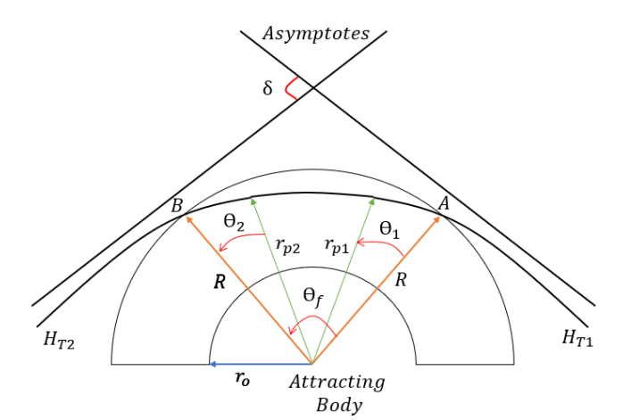
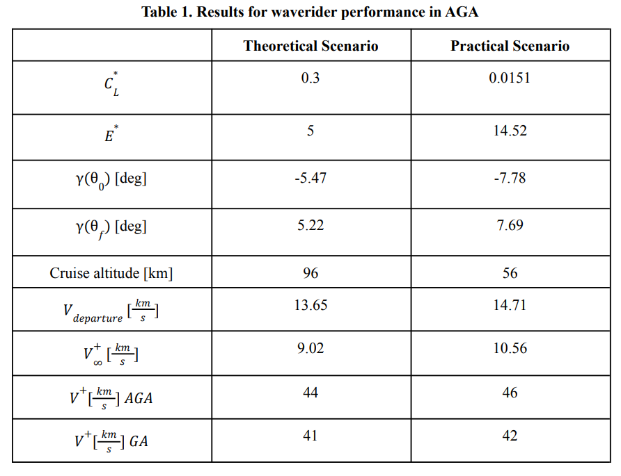

HYPERSONICS · TRAJECTORY OPTIMIZATION
Aerogravity-Assist Trajectory Optimization
Indirect optimal control of a hypersonic waverider through Venus’s upper atmosphere to increase flyby turning while minimizing energy losses due to aerodynamic drag.
Problem
Exploit Venus’s atmosphere to increase the turning capability of a planetary flyby without losing so much kinetic energy to drag that the benefit disappears.
My role
Formulated the atmospheric flight dynamics, derived the indirect optimal-control problem and control law, implemented the TPBVP in MATLAB, validated against published results, and compared theoretical and practical waverider parameters.
Workflow
Optimal-control formulation
The atmospheric segment is modeled with planar flight dynamics including gravity, lift, and drag in an exponential Venus atmosphere. The lift coefficient is the control variable. Pontryagin's Maximum Principle converts the problem into state and costate equations with transversality conditions, and MATLAB bvp4c solves the resulting two-point boundary-value problem.
Selected results


Outcome
Formulated the Venus aerogravity assist as an indirect optimal-control problem and optimized the waverider lift history to reduce drag losses. The analyzed cases produced approximately 3–4 km/s greater heliocentric departure velocity than a conventional gravity assist. Aerothermal feasibility was outside the study scope.